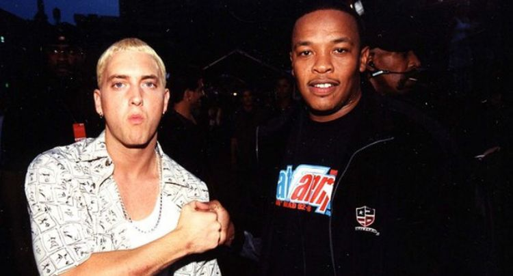
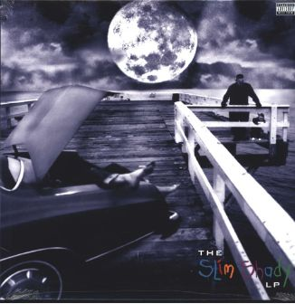

Qu' est ce qui a fait la compatibilité de ces deux monuments du rap ?
Un point commun, le rap
Découvert par Dr Dre, Eminem est un rappeur, compositeur et acteur américain. Andre Rommelle Yougn alias Dr Dre est un rappeur, producteur et ancien Dj. La collaboration de ces deux hommes a permis d'écrire une page dans le rap. Tout commence par un simple appel entre le jeune rappeur blanc et compositeur de renommé. L'arrivée de son second album collaboratif " The Slim Shady " place Eminem au sommet du rap.
Leur première rencontre
Jimmy Lovine, co-fondateur du label " Interscope records " fait écouter pour la première fois Eminem à Dr Dre. Quasiment inconnu à Détroit, le jeune rappeur voit sa vie changer. Dès la première écoute Dr Dre n'en revient pas. Il veut rencontrer ce jeune rappeur. Se trouvant à Las Vegas, Eminem reçoit un appel d'un certain Docteur. Il est étonné.
" Mec, on a eu un appel d'un docteur. Il veut te rencontrer. " et moi je lui dis : " Déconne pas avec moi. Déconne pas avec moi. Déconne pas avec moi. "
Eminem arrive dans une tenue jaune pétante au rendez-vous et Andre Romel Young ne tarde pas à faire l'éloge de sa musique.
" Je lui dis mec écoute, je pense que ton son est incroyable et j’adorerais travailler avec toi ".
Dr Dre prépare quelques samples avant son arrivée et Eminem se lance. Les premières minutes dans son studio leur ont permis de créer l'un de ces plus grand son " My name is ". Malgré la couleur blanche du rappeur Dr Dre fini par le signer, c'est donc le début d'une longue carrière pour lui. Les deux hommes deviennent de vrais amis.
" The Slim Shady", première collaboration
Commence alors la production de son second album. " The Slim Shady ", distribué par le label de Dr Dre " Aftermath Entertainment " est enregistré à Ferndale. Il annonce l'ascension d'Eminem dans le monde du rap. Produit par Dr Dre, les Bass Brothers et Eminem, le thème de cet album est l'alter - ego du rapper. On y retrouve des paroles violentes obscènes et diffamatoires.
Dès sa sortie le 23 février 1999, l'album est un vrai succès. Plus de 283 000 exemplaires sont vendus aux Etats-Unis. Il devient quatre fois disque de platine et remporte son premier Grammy Award en 2000. En 2003 il fait partie des 500 plus grands albums de toujours. Dr Dre réussi son pari.
Eminem crée son propre label en 1999 nommé " Shady Records " pour la promotion de ce nouvel album succès